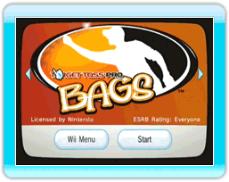
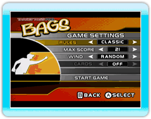

5 |
Introduction |
 |
 Target Toss Pro: Bags is a new video game based on beanbag toss - the nation's hottest backyard and tailgate sensation. "Bags", or "Cornhole" as they call it in some parts of the country, originated in the Midwest in the 1960's and has since become a staple at outdoor social events from coast-to-coast. Bags is a deceptively simple, yet extremely competitive game where players try to toss beanbags into a hole in a slightly raised platform or "box" for points, similar to horseshoes. Whether at a tailgate party or a summer barbeque, the game has become a social focal point, and the unmistakable "thud" of bags hitting the box is now a universal party soundtrack.
 Classic Cornhole scoring pits two players or two teams against one another. Players get 3 points for any bag in the hole and 1 point for landing on the box. However, the points are grouped out at the end of each inning in such a way that only one player is awarded points, based on their "over" for that inning. For example, if player 1 has 6 points worth of bags for the inning and player 2 has 9 points worth of bags, the only person to score anything for that inning is player 2, and they receive 3 points (their 9 minus the other players 6). If an inning ends in a tie, neither player scores any points. A game is played for as many innings as needed until one of the players reaches 21 (or some other pre-determined score). |
 Target Toss Pro: Bags is a fresh twist on the classic game, featuring a new scoring strategy that further rewards players for making a "swish" instead of a standard "hole shot". Players score 5 points for a swish, 3 points for any shot that hits the box before going into the hole, and 1 point for landing on the box. Each player gets 4 bag throws per inning, with 6 innings making up a game. The winner is the one with the most points at the end.
Target Toss Pro: Bags is a fresh twist on the classic game, featuring a new scoring strategy that further rewards players for making a "swish" instead of a standard "hole shot". Players score 5 points for a swish, 3 points for any shot that hits the box before going into the hole, and 1 point for landing on the box. Each player gets 4 bag throws per inning, with 6 innings making up a game. The winner is the one with the most points at the end.
 |
 |
 |